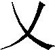

关于本书的整理情况
《三国演义》最初由作家出版社整理，于一九五三年初版印行。我社于一九五四年以此为基础，重加整理，自一九五五年出版后，印行较久。这次是再度整理，改出新版。
历次整理，都是采用毛宗岗本为底本。毛本是据明代版本加工修订的一个通行本，流传已久，文字上有好些优点，较便于广大群众的阅读。但毛本也存在不少问题：有明本原来不误的，毛本却改错了；有明本文字明显优胜的，毛本反改坏了。再者毛本初刊本已不易得，在它流行近三百年间，经过无数次的辗转翻刻、写印、排印，其中种种讹误，不一而足。因此，底本虽采用通行的毛本，仍须进行必要的校订工作。
我社一九五四年整理时，注意到上述情况，就主要参照明嘉靖壬午（一五二二）序刊本（过去曾称”弘治甲寅序刊本”）加以校订。若干毛本改错、改坏了的，斟酌情形，加以纠正。这样做的目的，并非泥信”古本”，只是希望整理过的毛本能成为错误较少、更利于阅读的一个通行本。
例如，第十九回写眭固”反投犬城去了”，毛本误”犬城”为”大城”（据《三国志·魏书·武帝纪》可证明本是）。
尤为突出的如，第三十八回叙孙权”广纳贤士”：”时有会稽阚泽字德润，彭城严畯字曼才，沛县薛综字敬文，汝阳程秉字德枢，吴郡朱桓字休穆，陆绩字公纪，吴人张温字惠恕，乌伤骆统字公绪，乌程吾粲字孔休……“云云。毛本误”严畯”为”严峻”、”汝阳”为”汝南”、”乌伤骆统字公绪”为”会稽凌统字公续”、”吾粲”为”吴粲”。其中骆统误为”凌统”一例，尤与文情不合，因为紧接着的下文就叙及”（孙）权部将凌操，……被黄祖部将甘宁一箭射死。凌操子凌统，时年方十五岁，奋力往夺父尸而归。”可见在此之先，凌统尚是追随父亲的一个不出名的少年，谈不上是招纳的所谓”贤士”之一。且凌统是吴郡余杭人，字公绩，毛本所载的籍贯、字号也都不确。
凡此一类，我们均依据明本，参酌史籍，加以改正。由于本书是普及性读物，避繁不作校字记，此类改动，不及备列，举例以概其馀。
毛本虽然是清初人所作的改订本，其中依然保存着一些元明时代（来源可能更早）的用语。如”无徒”是流氓无赖的意思，”磨旗”是圆圈式地挥舞旗帜的意思，过去通行的排印本臆改为”强徒”、”麾旗”等。我社在前次整理时亦就发现所及，作了纠正。
再有，《三国演义》毕竟不同于一般小说作品，它是历史小说，其中主要人物事迹绝大部分都是按照史籍记载的通俗演义。这样，书中存在的好些人名、地名、官制名称上的讹误，似乎就没有什么特别的理由要一任其继续沿误下去。校订中对这一类地方，凡是比较显著而不难考核的，也作了一些必要的改正。例如，第七回起写到”桓阶”，毛本、明本均作”桓楷”。此人《三国志·魏书》有传，其他史籍亦同作”阶”。似毋须拘执版本，保留”楷”这个误字，因即改为”阶”。至于回末联语中”求和桓阶又遭殃”句平仄遂难再调，只好任之。又如，第十六回”表赠陈珪秩中二千石”，毛本、明本均作”表赠陈珪致中二千石”，通行的排本又改”致中”为”治中”。”致”字用在此处固然费解，”治中二千石”之说既非汉制，且远于事理，亦不可通（参看该回注释）。因即据《三国志·魏书·吕布传》改为”秩中二千石”。
现在这次，我们又就改版（横排、简体字）的机会，对全书再次作了核订。除据大魁堂藏版的毛本，校改了旧排本沿袭的误植外，又顺着前次整理的途径，作了一些补苴罅漏的工作，大致有这样一些方面：
一、 解决了过去正文中存疑的个别问题。如第八十回”极天察地”，”察”字疑”际”字之误，今据清代宝经堂刊本正作”际”，”际”字是，从改。第八十一回”损将星于斗牛”，”损”字疑”陨”字之误，今据同本正作”陨”，”陨”字是，从改。
二、 在断句标点上，也作了改进。纠正了旧本个别断句失误。如，第三十三回引袁绍的话：”吾南据河北，阻燕、代，兼沙漠之众”，句读是错误的，今改正为”吾南据河（黄河），北阻燕、代……“又如，第一百一回”（魏）延大败，尽弃衣甲、头盔、匹马，引败兵望木门道中而走”，今改正为”延大败，尽弃衣甲、头盔，匹马引败兵望木门道中而走”。另外有些地方，即使文义并无大别，但如何句逗更觉顺适合宜，也尽可能地推敲斟酌，有所改进，如第一百七回”……奏永宁宫皇太后，令敕臣如奏施行。”今改为”……奏永宁宫。皇太后令，敕臣如奏施行。”
三、 准前次整理”桓楷”改”桓阶”例，对于一些历史人物的名字，以及个别地名，作了订正。如：”襄江”（第三十四回）、”凌公绩”（第五十一回）、”俞元”（第六十回）、”孱陵侯”（第七十七回）、”张隽

“（第一百一回）、”全琮”（第一百五回）、”仲恭”（第一百十回）、”景明”（第一百十四回）、”霍弋”（第一百十九回）等，所见毛、明各本，均作”湘江”、”凌公续”、”愈元”、”潺陵侯”、”张隽义”、”全综”、”仲闻”、”景召”、”霍戈”。我们在改正时，为了审慎，均曾参对有关史籍。其中有一些是得到读者来信指出，才得以检查校正的。四、 修改、调整了旧本的注释，并增加了相当数量的新注。对于旧本注释，此次颇有变动。新增注约一百五十条左右。希望这样能更便于读者了解一些难懂的古代事物和语言，有助于阅读小说正文。但书中引录的诗赋书檄笺表等古文，数量很大，其中有许多典故和艰深的文言词句，如果一一作注，势将非常繁重，而且和小说正文的注释量不成比例。考虑到这些毕竟不是小说的主体部分，因此并未多增加这一部分的注文。
另外，尚有一些个别问题，举例说明如下：
第一回写曹操的出身，毛本、明本同作”年二十，举孝廉，为郎，除洛阳北都尉。”“都”字是形讹，当作”部”，今据《三国志·魏书·武帝纪》改。洛阳是县，并无”都尉”官，”北都尉”之名是不可通的（参看该回注释）。
第九回写王允布置军兵刺杀董卓时，毛本有”卓裹甲不入，伤臂堕车”两句。”裹”字明本作”裏”。皆形近致误，当依《后汉书·董卓传》、《三国志》注引《英雄记》作”衷”。今校改为”衷甲”（参看该回注释）。
第一百六回写司马懿领兵攻打公孙渊，毛本有”乃令夏侯霸、夏侯威各引一军伏于济水之滨”语（明本同。前排本”济”字误植为”梁”字）。按此次战役发生在辽水两岸，该地亦并无所谓”济水”。查《资治通鉴》卷七十四《魏纪》景初二年四月记此事，写作”懿潜济水，出其北……“，这显然是写小说的人错会了”济（渡）水”二字的意义，误认为水名。今据《三国志·魏书·公孙渊传》、《晋书·宣帝纪》及《通鉴》等书，将”济水”酌改为”辽水”。
第二十七回叙关羽过沂水关到镇国寺，会见僧人普净；到第七十七回叙关羽死后”一魂不散”，在当阳县玉泉山重会此人时，却作”法名普静，原是汜水关镇国寺中长老”。毛本、明本前后关名同样歧异。从故事情节所表现的地理来判断，应以”汜水关”为是。我们就将地名准后文统一校订为”汜水关”，人名则据明本统一校订为”普净”。
《三国演义》全书规模庞大，故事情节错综复杂，我们的一切整理校改工作，都只是在不损伤毛本的故事原貌，充分尊重小说艺术虚构的原则下，所作的点滴文字修补。如问题越出这一范围，牵涉较大，则虽已发现有误，也概存其旧，不予更动。例如第三十三回，有这样一段：”且说袁尚、袁熙知曹兵将至，料难迎敌，乃弃城引兵，星夜奔辽西投乌桓去了。幽州刺史乌桓触，聚幽州众官，歃血为盟，共议背袁向曹之事。……乌桓触……径来降操。操大喜，加为镇北将军。”细心的读者会感到纳闷不解：前文已交代幽州刺史就是袁熙，怎么又突然说乌桓触是幽州刺史？袁熙刚投奔乌桓，怎么这个”幽州刺史”恰巧又叫做”乌桓触”？而且除此段外，这个”乌桓触”在全书中再也不见踪影，又是何故？《三国志·魏书·袁绍传》载此事件云：”（袁）尚、（袁）熙为其将焦触、张南所攻，奔辽西乌桓。触自号幽州刺史，驱率诸郡太守令长，背袁向曹，……"”触”就是”焦触”；古代句读不精密，容易致误，很可能是通俗演义的作者误把史籍中”乌桓”二字连下，读成人名，无意中增添了一个并不必要的小说人物。
类似这样的例子还有。我们想来，没有必要也没有合适的办法来纠正古人的这种疏失。提出此点，借以向读者说明：尽管《三国演义》的故事，一般认为是”七实三虚”，仍宜更多地作为写历史题材的小说看，而在当作具体的史实知识看时，注意到上述情况，未宜率尔据信。
前版附印的”三国演义地图”，现仍保留。由于三国时期的区域和州郡分合变更，情况复杂，小说所叙更不等于历史实录，所以这幅图只是标示了一个粗略的梗概，为阅读本书提供一些方便而已。
以上的各项做法，都未必妥善。由于我们水平有限，难免有考虑不周、失于检照，甚至判断处理错误的地方，热切希望得到广大读者的批评和指正，使我们的工作不断地得到改进。
人民文学出版社编辑部
一九七三年八月